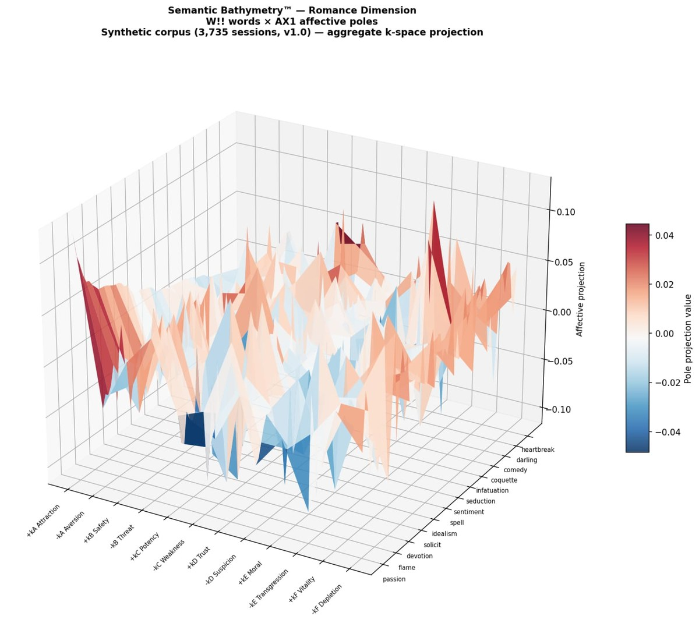
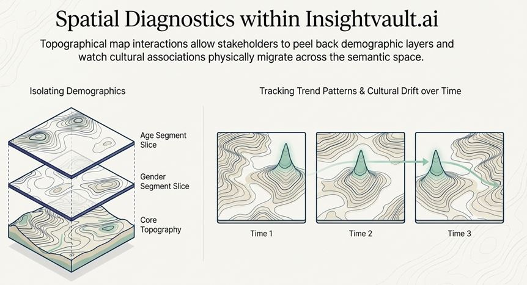

The analysis layer
Insightvault
AI-assisted analysis and optimisation.
AI-assisted analysis and optimisation.

Results are rendered as an inverted Boltzmann-style energy landscape: stable, frequently co-activated regions of meaning (low-energy states) appear as attractor peaks, and systematically avoided regions (high-energy states) appear as repulsive basins, giving equal visual weight to what a population approaches and what it avoids.
Each of the six affective axes adopts 10 pole-aligned anchors calibrated against the specific semantic vocabulary of the Dimension under consideration, projecting the anonymised Semba data onto a reticular topography.
Analysis can then be conducted by demographic cell to identify which words or phrases resonate with specific audiences, and to monitor how sentiment changes over time.
The Peduncular Quotient (PQ) identifies which words act as structural connectors across otherwise distinct regions of meaning, rather than simply which words are chosen most often. This includes words which are systematically avoided, and can be mapped across different conceptual Dimensions.
Canonical examples are words like "Bank" and "Mortgage", where the former sits at the junction of otherwise unrelated domains — finance, aircraft manoeuvres and river geography — whilst "Mortgage" belongs almost entirely to finance.
In this way a single word such as "Heart" can be seen to have varying affective weight when viewed in different semantic contexts, such as Romance, Health and Poker.
Periscope is the platform's recursive calibration layer. Rather than treating demographic and circadian correction factors as fixed assumptions, it models them as parameters to be learned from empirical evidence, updated from the accumulated SEMBA dataset.
The use of Bayesian and Monte Carlo techniques means calibration is continually optimised, so that noise filters, semantic correlations and input vocabulary are fine-tuned to reflect multi-dimensional real-world relationships.
Together, these are what make the platform adaptive rather than static — quarter-on-quarter drift in the affective landscape is a critically important signal, not noise to be overlooked or filtered out.

Illustrative example:
If you wish to resonate "Trust" with a young woman at night, the most effective prompt might be "Loyalty"; however, for a middle-aged man during the day, to evoke the concept of "Trust" it might be preferable to refer to "Integrity". This is generally a stable pattern, but over the last 3 quarters older women appear to have been migrating their opinion in favour of "Integrity" and away from "Loyalty". To bridge the concepts of "Trust" and "Quality", the most effective prompts would be "Reliable" and "Consistent", but not "Compromise" or "Negotiate".